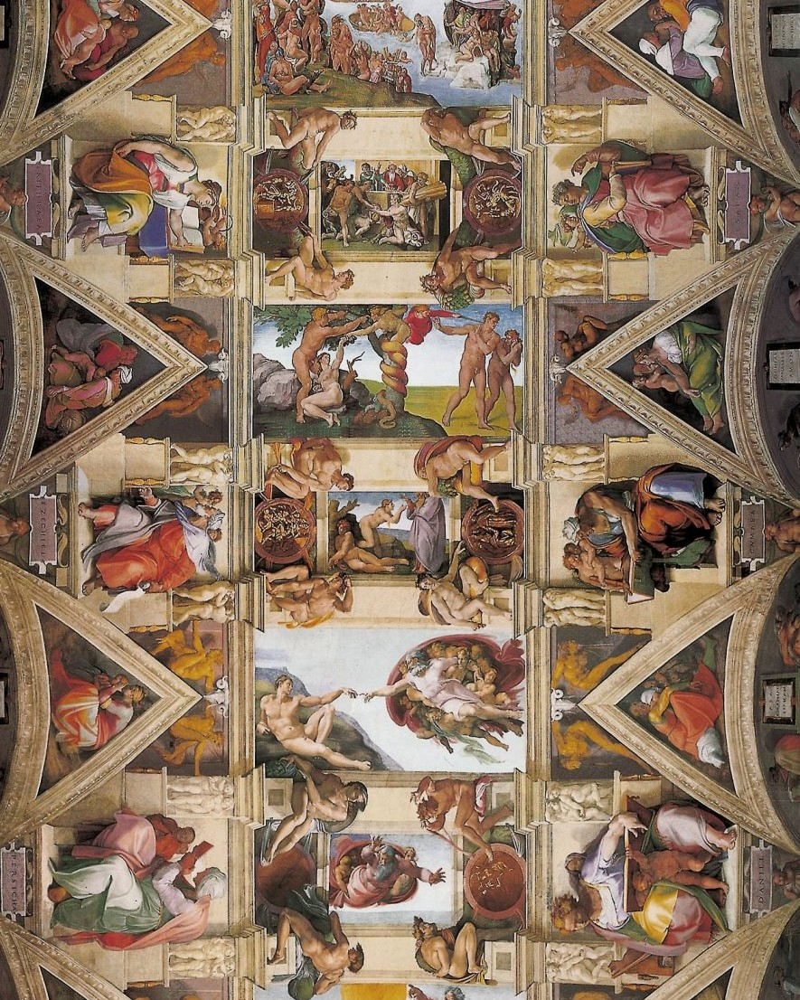
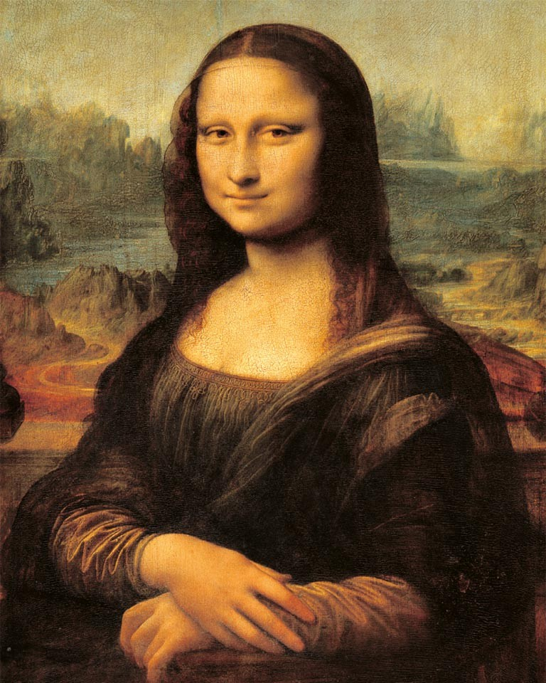
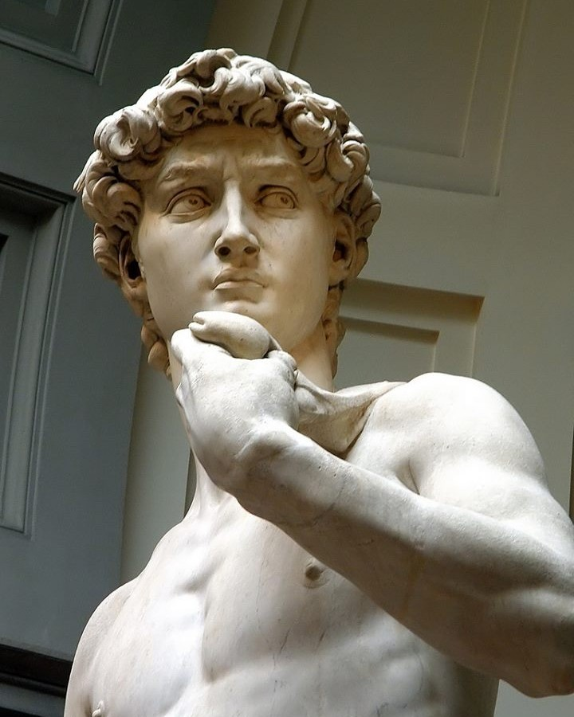
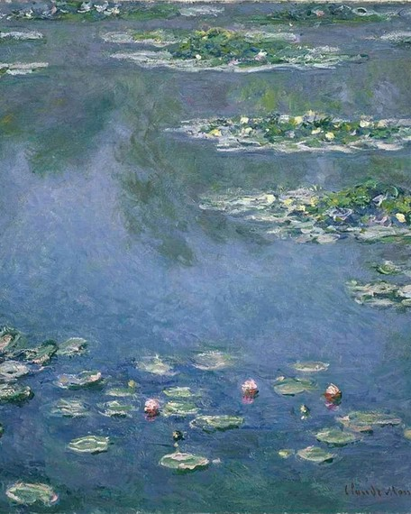

Per la Cappella Sistina, Michelangelo dipinse la volta su richiesta di Papa Giulio II, creando un'opera monumentale che rappresenta episodi della Genesi, tra cui la Creazione di Adamo. Il soffitto è composto da nove riquadri principali con scene bibliche, circondate da figure di profeti, sibille e antenati di Cristo. Lo stile è potente e dinamico, con figure monumentali e pose complesse che dimostrano il genio anatomico dell'artista.
L'identità della Gioconda è ancora oggetto di dibattito, ma l'ipotesi più accreditata è che si tratti di Lisa Gherardini. Tuttavia, alcuni studiosi hanno avanzato altre teorie, ipotizzando che il dipinto possa essere un autoritratto mascherato dello stesso Leonardo. La Gioconda è un'opera rivoluzionaria per diversi motivi:
Il David è un esempio perfetto dell'ideale di bellezza rinascimentale, con un'attenzione particolare all'anatomia. Esso non è solo un capolavoro artistico, ma anche un forte simbolo politico: Firenze, in quel periodo, era una repubblica indipendente minacciata da potenze più grandi. La scultura, quindi, rappresentava il coraggio della città contro i suoi nemici.
Come possiamo vedere nella quarta immagine, Monet utilizza pennellate veloci per catturare l'effetto mutevole della luce sull'acqua. Oltretutto l'acqua, non è solo uno sfondo, ma diventa protagonista, riflettendo il cielo, gli alberi e i fiori in un gioco di colori sempre diverso a seconda dell'ora del giorno e delle stagioni. Monet con questo vuole farci capire che i Gigli d'Acqua non sono solo paesaggi, ma vere e proprie esplorazioni della percezione visiva. Non cerca di rappresentare la realtà in modo dettagliato, ma di trasmettere un'impressione fugace della natura, cogliendo l'attimo esatto in cui la luce trasforma il paesaggio.
Per ritornare alla pagina principale clicca qui!!!